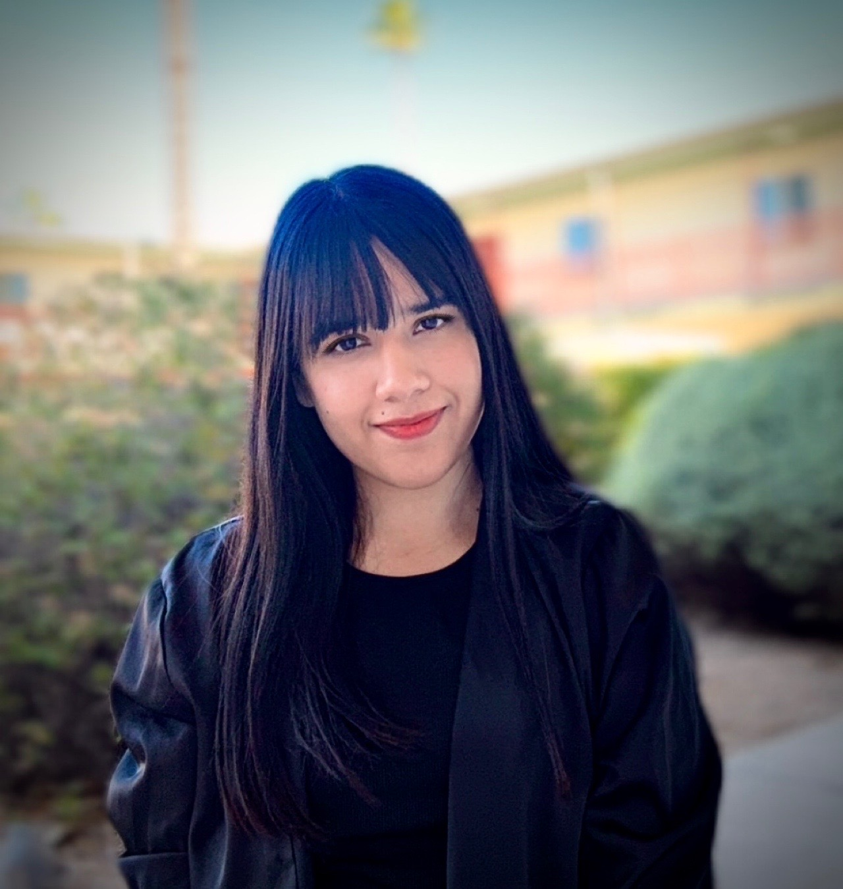

Asma
PhD Candidate
Department of Linguistics
University of Arizona
asma1@arizona.edu
I am a fourth-year Ph.D. candidate in Linguistics specializing in syntax, with a focus on argument structure and the syntax–semantics interface. My research examines how grammatical structure encodes meaning and how these representations are realized across languages and in the mind. Working within the generative tradition, I investigate how hierarchical structure constrains interpretation, with particular attention to features such as volitionality, agency, and agreement. I also explore how these representations are reflected in language processing and how they compare to artificial systems such as large language models. My empirical work focuses on Indo-Aryan languages, especially Punjabi, Urdu, and the critically endangered Dawoodi language of northern Pakistan, combining theoretical analysis, experimental methods, and fieldwork. My research includes work on volitionality in Punjabi, agreement attraction in Urdu, and ongoing fieldwork on Dawoodi aimed at documenting its syntax and supporting language preservation.